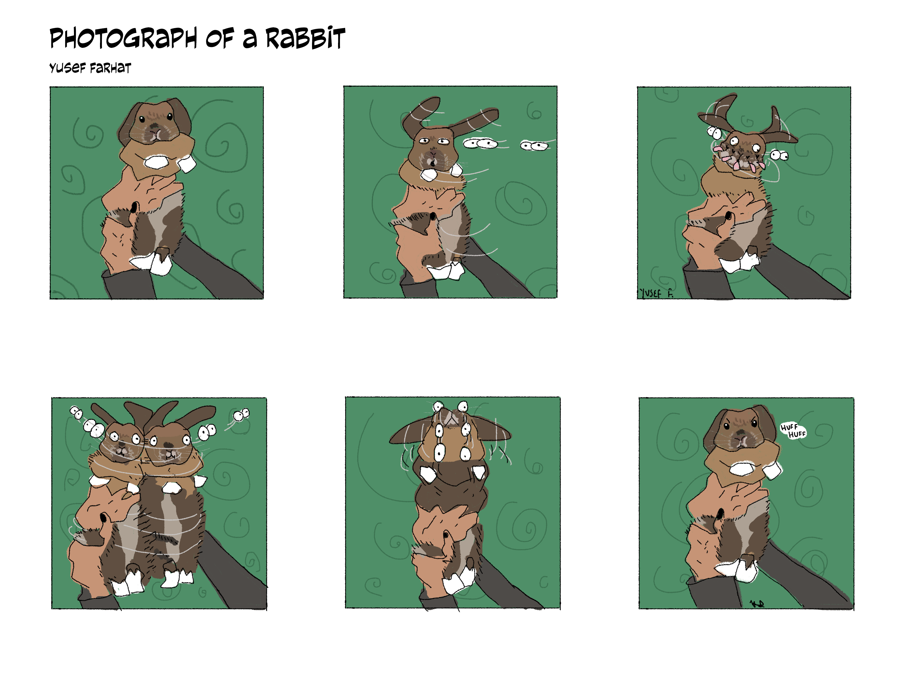

Hello! My name is Yusef Farhat, and I am a freshman at UTD getting my MAD major with an audio production minor. My interests include thrifting, video games, music, old technology, and collecting.
High School: Harmony Science Academy - Carrollton
College: University of Texas at Dallas
ProTools/Audio Editing
Codespaces/Internet Design
Adobe/Photoshop

Michael's: November 2024 - February 2025
Jersey Mike's: October 2025 - Present